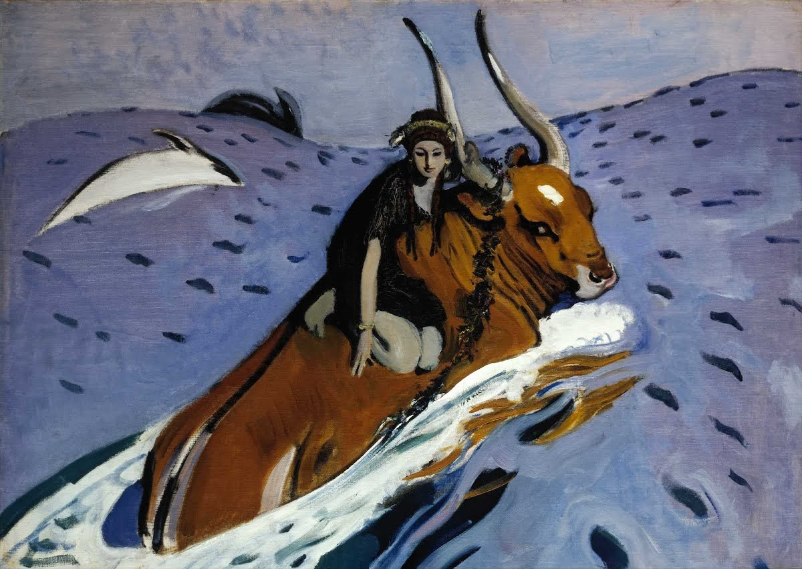

Tizian · Der Raub der Europa · ca. 1560–62 · Isabella Stewart Gardner Museum, Boston

Valentin Serov · Der Raub der Europa · 1910 · Tretjakow-Galerie, Moskau
§ 1 · Inhaltsangabe
Der listige Gott und die Königstochter
Jupiter verliebt sich in die Königstochter Europa und schmiedet einen geheimen Plan. Er lässt die königliche Rinderherde genau an den Strand treiben, an dem Europa oft mit ihren Freundinnen spielt.
Um ihr nah zu kommen, legt der Göttervater seine wahre Gestalt ab und verwandelt sich in einen wunderschönen und schneeweißen Stier. Er wirkt dabei so friedlich, dass Europa schnell ihre anfängliche Angst verliert. Sie streichelt das imposante Tier, füttert es mit Blumen und setzt sich schließlich völlig ahnungslos auf seinen Rücken.
Genau darauf hat Jupiter gewartet. Er geht sofort ins Wasser und schwimmt mit dem verängstigten Mädchen aufs offene Meer hinaus.
Ovidius Naso, Metamorphōsēon Libri XV · Buch II, Verse 833–875
§ 2 · Metrische Analyse
Daktylischer Hexameter — Verse 871–875
Ovid schreibt in daktylischen Hexametern: jeder Vers besteht aus sechs Füßen.
Jeder Fuß ist entweder ein Daktylus (— ∪ ∪) oder ein Spondeus (— —);
der sechste Fuß ist stets ein Spondeus oder Trochäus (— ×).
—Länge (Syllaba longa)
∪Kürze (Syllaba brevis)
×Anceps (frei im letzten Fuß)
DAKDaktylus — ∪ ∪
SPSpondeus — —
Vers 871 · falsa pedum primis vestigia ponit in undis
fal-sa pe-dum prī-mīs ves-tī-gi-a pō-nit in un-dīs
1 DAK2 SP3 SP4 DAK5 DAK6 — ×
Vers 872 · inde abit ulterius mediīque per aequora ponti
Interpretation: Wie unterstützt die Metrik die Stimmung?
Vers 871 — falsa pedum primis vestigia ponit in undis
Die Fußfolge DAK – SP – SP – DAK – DAK enthält zwei Spondeen hintereinander. Vier schwere Längen in der Versmitte verlangsamen den Rhythmus spürbar — wie Jupiters trügerisch bedächtige Schritte ins Wasser (falsa). Die Metrik imitiert die berechnete, schleichende Bewegung der Täuschung.
Vers 875 — inposita est; tremulae sinuantur flamine vestes
Die Fußfolge DAK – DAK – DAK – SP – DAK kippt ins Gegenteil: drei schnelle Daktylen erzeugen einen fließenden, wellenförmigen Rhythmus. Er bildet das Flattern von Europas Kleidern im Wind klanglich nach — der Vers klingt aus wie eine Welle, die sich bricht.
§ 3 · Grammatik
Ablativus absolutus und Hyperbaton
iactatis … aethera … pennis
Ovid, Met. II, 835 — Ablativus absolutus mit Hyperbaton
In Vers 835 verwendet Ovid einen Ablativus absolutus:
„iactatis … pennis".
Das Partizip Perfekt Passiv „iactatis" und das Substantiv
„pennis" stehen beide im Ablativ Plural und sind grammatisch
unabhängig vom Hauptsatz, dessen Subjekt Atlantiades (Merkur) ist.
Der Ablativus absolutus gibt die Begleitumstände des Handelns an —
Merkur schwingt sich in den Himmel, während er die Flügel schlägt.
Ovid trennt die beiden Teile des Abl. abs. durch das dazwischenstehende Objekt
„aethera" — das ist ein bewusstes
Hyperbaton, das die Leichtigkeit und Weite des Fluges
sprachlich nachahmt. Die Konstruktion ist also nicht nur ein grammatisches Mittel,
sondern unterstreicht gleichzeitig die Dynamik der Szene.
Form
Wort
Analyse
Partizip
iactatis
PPP von iacto, Abl. Pl. mask./neutr.
Substantiv
pennis
Abl. Pl. von penna (Flügel)
Objekt (Hyperbaton)
aethera
Akk. Sg. von aether (Äther, Himmel)
Hauptsatz-Subj.
Atlantiades
Nom. Sg. — Patronymikon für Merkur
iactatis … aethera … pennis↑ Hyperbaton: Abl.-abs.-Teile umrahmen das Objekt ↑
Das Hyperbaton schafft eine Art »Klammer«, die das Objekt
aethera buchstäblich in die Schwingen einschließt —
ein typisches ovidisches Stilmittel für bildhafte Sprachgestaltung.
§ 4 · Schulausgabe
Kommentierte Ausgabe Verse 867–875
Iuppiter et Europa
P. Ovidius Naso · Metamorphōsēon Liber II · vv. 867–875
867virgineavirginea manu: „von Mädchenhand" — Adj. betont Europas Unschuld und Unwissenheit
plaudenda manu, modo
cornuacornua, -uum n. Pl.: Hörner; Europa spielt unbekümmert mit dem Stier
sertis
868impediendaimpedienda: Gerundivum von impedio — „die umwunden werden sollen/müssen"; drückt eine Bestimmung aus
novis.
ausa estausa est: Perf. von audeo (Semideponens) — „sie wagte"; markiert den entscheidenden Schritt
quoque regia virgo
869nescianescia + indirekter Fragesatz (quem premeret): Adj. — „ohne zu wissen"; Konj. Imperf. im indirekten Fragesatz,
quem premeret, tergo
considereconsidere: Inf. von consido — „sich setzen auf"; ergänzt ausa est
tauri:
870
cum deus a terra siccoque a litore
sensimsensim: Adverb — „allmählich, langsam"; erzeugt Spannung durch die Betonung der Langsamkeit
871falsafalsa vestigia: „trügerische Schritte/Spuren" — falsa betont die List und Täuschung des Gottes
pedum primis
vestigiavestigium, -ii n.: Spur, Schritt; primis … in undis: die zaghaften ersten Schritte ins Wasser
ponit in undis,
872
inde abit
ulteriusulterius: Komparativadverb von ultra — „weiter hinaus"; steigert die Gefahr und Ausweglosigkeit
mediique per aequora
pontipontus, -i m.: das Meer; Gen. von pontus abhängig von aequora — „mitten über die Meeresfläche"
873
fert
praedampraeda, -ae f.: Beute, Raub — emotionaler Höhepunkt: Europa wird zum bloßen Objekt degradiert.
pavet haecpavet haec: „sie zittert vor Angst" — haec = Europa; Perspektivwechsel zur Betroffenen
litusque
ablataablata: PPP von aufero — „die Fortgetragene/Entführte"; prädikativ zu haec
relictum
874
respicit et
dextradextra (manu): Abl. instrumenti — „mit der rechten Hand"; Ellipse von manucornumcornu, -us n.: Horn; Europa klammert sich ans Stierhorn — letzter Halt über dem Meer
tenet, altera dorso
875inposita estinposita est: Passiv — „(die Hand) ist aufgelegt"; Subj. ist altera (sc. manus) aus V. 874;
tremulaetremulae vestes: „flatternde Kleider" — tremulae evoziert zugleich das Zittern Europas vor Angstsinuantursinuantur: Passiv von sinuo — „bauschen sich, wölben sich im Wind"; malerisches Schlussbild
flamine vestes.
Deutsche Übersetzung (Reclam)
… lässt er sich bald die Brust von der Mädchenhand tätscheln, bald die Hörner mit
frischen Girlanden umwinden. Es wagte die Königstochter sogar, ohne zu wissen, auf
wem sie ritt, sich auf den Rücken des Stieres zu setzen. Da strebt der Gott allmählich
vom Festland und dem trockenen Strand hinweg und setzt seine Füße trügerisch ein wenig
ins Wasser; dann entfernt er sich weiter und trägt seine Beute mitten über die
Meeresfläche. Sie ängstigt sich und blickt, die Entführte, zum Strand zurück, den sie
verlassen hat. Mit der Rechten hält sie ein Horn fest, die andere Hand ruht auf dem
Rücken. Das flatternde Kleid bauscht sich im Winde.
Vokabular
audeo, ausus sum (Semiodep.)wagen, sich erkühnen
impedio, -ireumwinden, behindern, fesseln
consido, -ere, consedisich setzen, sich niederlassen
vestigium, -ii n.Spur, Schritt, Fußtritt
praeda, -ae f.Beute, Raub
paveo, -es, pavierschrecken, zittern vor Angst
cornu, -us n.Horn; hier: Stierhorn
sinuo, -arebauschen, wölben im Wind
Aufgaben
Aufgabe 1
Paraphrase: Formuliere den Inhalt der Verse 870–875 in eigenen deutschen Worten.
Achte dabei auf die Perspektivwechsel zwischen Jupiter und Europa.
Jupiter entfernt sich langsam und heimlich vom Ufer. Die Schritte ins Wasser
werden als „trügerisch" (falsa) beschrieben — er täuscht Europa über
seine Absicht. Dann schwimmt er immer weiter ins offene Meer. Ovid wechselt zur
Perspektive Europas: Sie erschrickt, blickt zurück zum verlassenen Strand und
hält sich mit beiden Händen fest — ein Bild der Hilflosigkeit und des Verlustes.
Aufgabe 2
Stilmittel: Benenne und erkläre die Wirkung von mindestens
zwei Stilmitteln in den Versen 873–875. Gehe auf den Zusammenhang
zwischen Sprache und Inhalt ein.
1. Praeda (V. 873): Das Wort „Beute" reduziert Europa auf ein
Objekt — die Brutalität des Raubes wird durch einen einzigen Begriff komprimiert. 2. Polysyndeton (et … altera, V. 874): Die Reihung
imitiert das hektische, simultane Klammern Europas mit beiden Händen. 3. Alliterationtremulae … flamine (V. 875): Das
Zittern und der Wind erzeugen klanglich das Flattern des Kleides — Sprache
und Inhalt spiegeln sich gegenseitig.
§ 5 · Über den Mythos hinaus
Bezug zur eigenen Lebenswelt
Bezug zur eigenen Lebenswelt: Der Mythos und Social Media
Jupiter verwandelt sich in einen makellosen Stier — kein Drohen, friedliche Miene, perfektes Äußeres (V. 852–857). Alles ist bewusst inszeniert, um Europas Vertrauen zu gewinnen. Das gleiche Prinzip begegnet uns heute auf Social Media: Ein Profil mit gestohlenen Fotos, charmanten Nachrichten, scheinbar echtem Interesse — dahinter steckt jemand mit ganz anderen Absichten.
Stell dir vor, du bekommst auf Instagram eine Nachricht von jemandem, der gut aussieht, sympathisch schreibt und genau deine Interessen teilt. Über Wochen baut sich ein Vertrauen auf — genau wie bei Europa, die den Stier erst vorsichtig berührt, dann streichelt, dann füttert und sich schließlich auf seinen Rücken setzt (V. 860–868). Jeder Schritt fühlt sich harmlos an. Erst als Jupiter ins Wasser geht, merkt Europa, dass es zu spät ist — sie blickt zum Strand zurück, den sie nicht mehr erreichen kann (V. 873). Genauso geht es Opfern von Catfishing: Wenn die Täuschung auffliegt, sind oft schon persönliche Daten, Bilder oder Geld in den falschen Händen.
Die Warnung hinter Ovids Mythos ist über 2000 Jahre alt, aber aktueller denn je: Nicht alles, was schön und harmlos aussieht, ist es auch.
§ 6 · Text
Lateinischer Originaltext mit deutscher Übersetzung
848ille pater rectorque deum, cui dextra trisulcis
849ignibus armata est, qui nutu concutit orbem,
850induitur faciem tauri mixtusque iuvencis
851mugit et in teneris formosus obambulat herbis.
852quippe color nivis est, quam nec vestigia duri
853calcavere pedis nec solvit aquaticus auster;
854colla toris exstant, armis palearia pendent,
855cornua parva quidem, sed quae contendere possis
856facta manu, puraque magis perlucida gemma;
857nullae in fronte minae nec formidabile lumen:
858pacem vultus habet. miratur Agenore nata,
859quod tam formosus, quod proelia nulla minetur;
860sed quamvis mitem metuit contingere primo:
861mox adit et flores ad candida porrigit ora.
862gaudet amans et, dum veniat sperata voluptas,
863oscula dat manibus; vix iam, vix cetera differt
864et nunc adludit viridique exsultat in herba,
865nunc latus in fulvis niveum deponit harenis
866paulatimque metu dempto modo pectora praebet
867virginea plaudenda manu, modo cornua sertis
868impedienda novis. ausa est quoque regia virgo
869nescia, quem premeret, tergo considere tauri:
870cum deus a terra siccoque a litore sensim
871falsa pedum primis vestigia ponit in undis,
872inde abit ulterius mediīque per aequora ponti
873fert praedam. pavet haec litusque ablata relictum
874respicit et dextra cornum tenet, altera dorso
875inposita est; tremulae sinuantur flamine vestes.
833–835Sobald der Sohn der Atlastochter jenes Mädchen so für ihre Worte und für ihre unheilige Gesinnung bestraft hat, verlässt er das nach Pallas benannte Land, schlägt mit den Flügeln und gelangt in den Himmel.
836–842Ihn ruft sein Vater beiseite und spricht zu ihm, ohne ihm den wahren Grund seines Auftrags, nämlich die Liebe, zu nennen: »Mein Sohn, du treuer Bote meiner Befehle, spute dich und gleite mit gewohnter Schnelligkeit vom Himmel hinab in das Land, das zum Gestirn deiner Mutter emporblickt und links von dir liegt. Die Eingeborenen nennen es Sidonis. Dorthin eile, und die königliche Rinderherde, die du dort in der Ferne Gebirgskräuter fressen siehst, lenke zur Küste!«
843–845Sprach's, und schon sind die Jungstiere vom Berg vertrieben und ziehen, wie befohlen, zum Strand, wo die Tochter des großen Königs in Begleitung junger Mädchen aus Tyros zu spielen pflegte.
846–851Schlecht vertragen sich Würde und Liebe; selten wohnen sie beisammen! Es trennt sich von seinem majestätischen Szepter der Vater und Herrscher der Götter, dessen rechte Hand mit dem dreizackigen Blitz bewaffnet ist. Der Gott, der durch sein Nicken die Welt erschüttert, nimmt die Gestalt eines Stieres an, mischt sich unter die Jungstiere, muht und spaziert anmutig durch die zarten Gräser.
852–857Ist er doch weiß wie Schnee, in den noch keine harte Sohle ihre Spuren getreten hat und den kein nasser Südwind schmelzen ließ. Der Hals strotzt vor Muskeln, am Bug hängen die Wammen, die Hörner sind zwar klein, doch könnte man sie für kunstvolle Handarbeit halten, auch sind sie durchscheinender als reine Edelsteine. Die Stirn hat nichts Drohendes, das Auge nichts Furchterregendes, die Miene strahlt Frieden aus.
858–861Es staunt Agenors Tochter, dass er so schön ist, dass er nicht angriffslustig und bedrohlich wirkt. Aber trotz seiner Sanftmut fürchtet sie sich zunächst, ihn anzurühren. Bald nähert sie sich ihm und hält ihm Blumen ans schneeweiße Maul.
862–867Da freut sich der Liebende, und in der Vorfreude auf die erhofften Wonnen küsst er ihr die Hände. Kaum, ja kaum kann er das Weitere noch aufschieben. Bald kommt er spielerisch auf sie zu, bald springt er im grünen Grase umher, bald legt er seine schneeweiße Flanke in den gelben Sand. Und nachdem er ihr allmählich die Furcht genommen hat, lässt er sich bald die Brust von der Mädchenhand tätscheln, bald die Hörner mit frischen Girlanden umwinden.
868–869Es wagte die Königstochter sogar, ohne zu wissen, auf wem sie ritt, sich auf den Rücken des Stieres zu setzen.
870–872Da strebt der Gott allmählich vom Festland und dem trockenen Strand hinweg und setzt seine Füße trügerisch ein wenig ins Wasser; dann entfernt er sich weiter und trägt seine Beute mitten über die Meeresfläche.
873–875Sie ängstigt sich und blickt, die Entführte, zum Strand zurück, den sie verlassen hat. Mit der Rechten hält sie ein Horn fest, die andere Hand ruht auf dem Rücken. Das flatternde Kleid bauscht sich im Winde.
848ille pater rectorque deum, cui dextra trisulcis
849ignibus armata est, qui nutu concutit orbem,
850induitur faciem tauri mixtusque iuvencis
851mugit et in teneris formosus obambulat herbis.
852quippe color nivis est, quam nec vestigia duri
853calcavere pedis nec solvit aquaticus auster;
854colla toris exstant, armis palearia pendent,
855cornua parva quidem, sed quae contendere possis
856facta manu, puraque magis perlucida gemma;
857nullae in fronte minae nec formidabile lumen:
858pacem vultus habet. miratur Agenore nata,
859quod tam formosus, quod proelia nulla minetur;
860sed quamvis mitem metuit contingere primo:
861mox adit et flores ad candida porrigit ora.
862gaudet amans et, dum veniat sperata voluptas,
863oscula dat manibus; vix iam, vix cetera differt
864et nunc adludit viridique exsultat in herba,
865nunc latus in fulvis niveum deponit harenis
866paulatimque metu dempto modo pectora praebet
867virginea plaudenda manu, modo cornua sertis
868impedienda novis. ausa est quoque regia virgo
869nescia, quem premeret, tergo considere tauri:
870cum deus a terra siccoque a litore sensim
871falsa pedum primis vestigia ponit in undis,
872inde abit ulterius mediīque per aequora ponti
873fert praedam. pavet haec litusque ablata relictum
874respicit et dextra cornum tenet, altera dorso
875inposita est; tremulae sinuantur flamine vestes.
Deutsch · Reclam
833–835Sobald der Sohn der Atlastochter jenes Mädchen so für ihre Worte und für ihre unheilige Gesinnung bestraft hat, verlässt er das nach Pallas benannte Land, schlägt mit den Flügeln und gelangt in den Himmel.
836–842Ihn ruft sein Vater beiseite und spricht zu ihm, ohne ihm den wahren Grund seines Auftrags zu nennen: »Mein Sohn, spute dich und gleite mit gewohnter Schnelligkeit hinab in das Land, das die Eingeborenen Sidonis nennen. Lenke die königliche Rinderherde zur Küste!«
843–845Sprach's — und schon sind die Jungstiere vom Berg vertrieben und ziehen zum Strand, wo die Tochter des großen Königs mit Mädchen aus Tyros zu spielen pflegte.
846–851Schlecht vertragen sich Würde und Liebe. Der Vater und Herrscher der Götter nimmt die Gestalt eines Stieres an, mischt sich unter die Jungstiere, muht und spaziert anmutig durch die zarten Gräser.
852–857Er ist weiß wie unberührter Schnee. Der Hals strotzt vor Muskeln, die Hörner sind durchscheinender als reine Edelsteine. Die Stirn hat nichts Drohendes, die Miene strahlt Frieden aus.
858–861Agenors Tochter staunt über seine Schönheit. Trotz seiner Sanftmut fürchtet sie sich anfangs, ihn anzurühren. Bald hält sie ihm Blumen ans schneeweiße Maul.
862–867Der Liebende freut sich und küsst ihr die Hände. Er spielt mit ihr, springt im grünen Gras umher, lässt sich die Brust tätscheln und die Hörner mit frischen Girlanden umwinden.
868–869Es wagte die Königstochter sogar, ohne zu wissen, auf wem sie ritt, sich auf den Rücken des Stieres zu setzen.
870–872Da strebt der Gott allmählich vom Festland und dem trockenen Strand hinweg, setzt seine Füße trügerisch ins Wasser und trägt seine Beute mitten über die Meeresfläche.
873–875Sie ängstigt sich und blickt, die Entführte, zum verlassenen Strand zurück. Mit der Rechten hält sie ein Horn fest, die andere Hand ruht auf dem Rücken. Das flatternde Kleid bauscht sich im Winde.